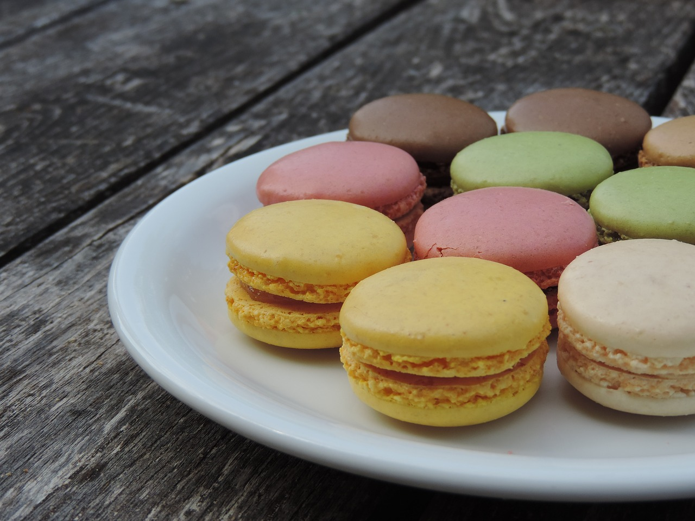

Macarons
Back to Homepage

The following recipe is directly from Preppy Kitchen, because in no way am I a baker. I simply code websites, and this is a TOP project. Here is a link to the recipe.
Ingredients
- eggs
- almond flour
- cream of tartar
- vanilla extract
- granulated sugar
- powdered sugar
- salt
- butter
- optional food coloring
How to Make Macarons
- "Sieve" (literally no clue what that means) the granulated sugar and almond flour in a large bowl and whisk it.
- Repeat step 1 until you have a nice, smooth top.
- Whip egg whites (you're gonna have to look up how to do that if you don't know) with cream of tartar, then add salt, then add sugar gradually. Mix together. This is also where you would add vanilla extract and food coloring if desired.
- Whisk the meringue until it is stiff.
- Add the sugar and almond mixture and fold in gently. Keep folding until all of the dry mixture has been added. The batter should have a "lava-like" consistency.
- Transfer batter to a 12 tip pastry bag and pipe onto a cookie sheet with parchment paper. When done, tap the tray a few times to remove air bubbles.
- Let batter sit for 40-60 minutes until it dries a bit. Bake for 12-15 minutes at 300F.
- Allow to cool for 10 minutes, then transfer to a wire rack.
- Pipe filling onto the back of half of the macaron shells so that you can stick them together.